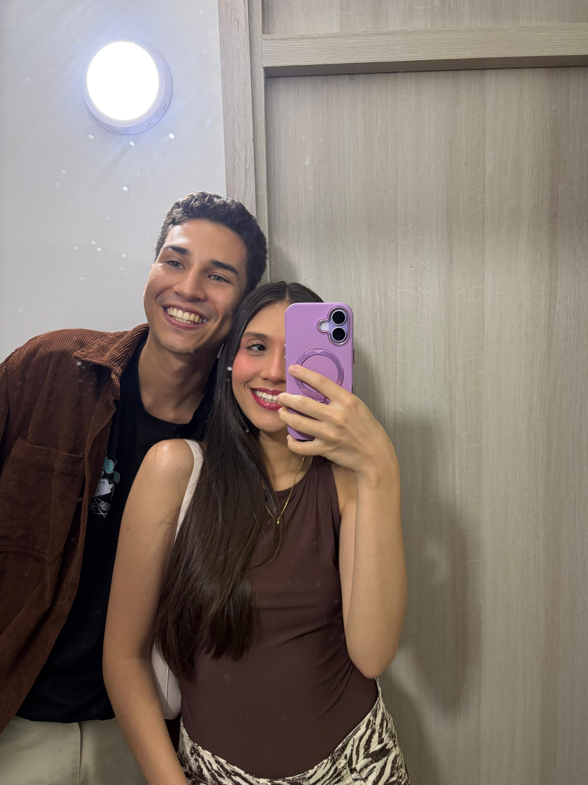
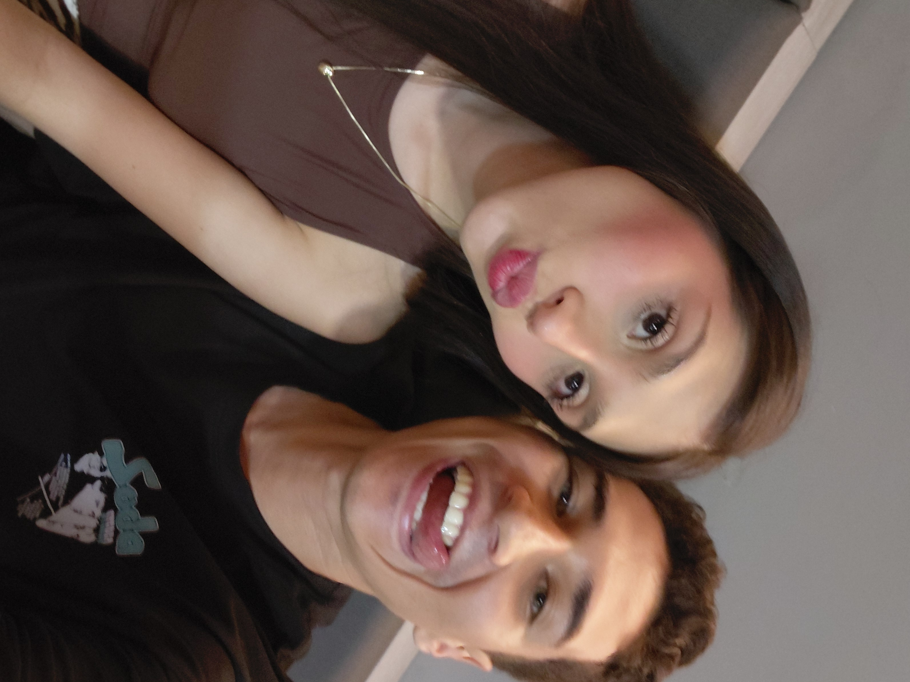
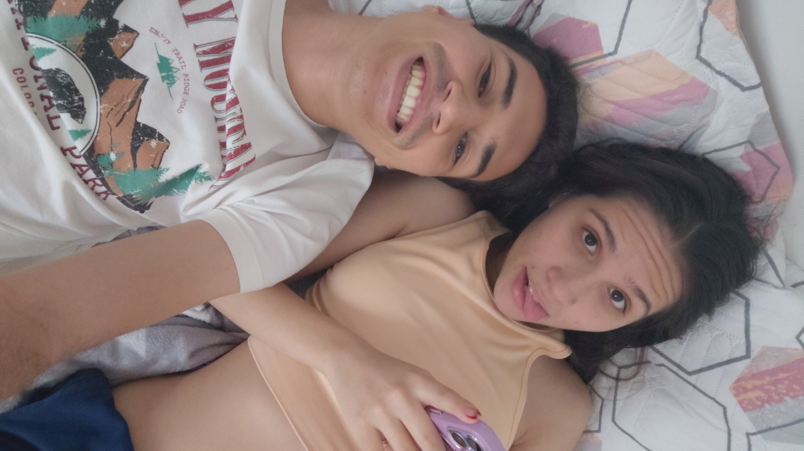
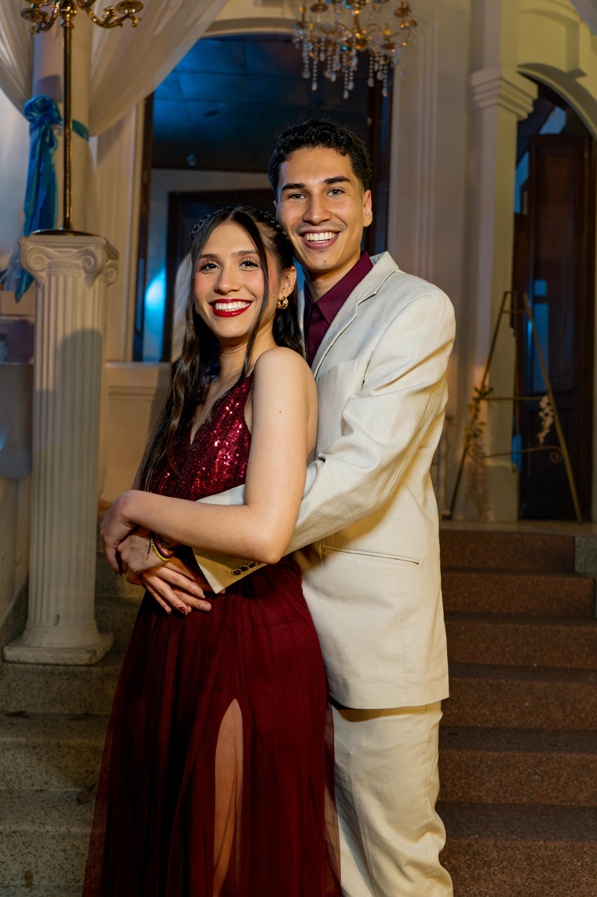
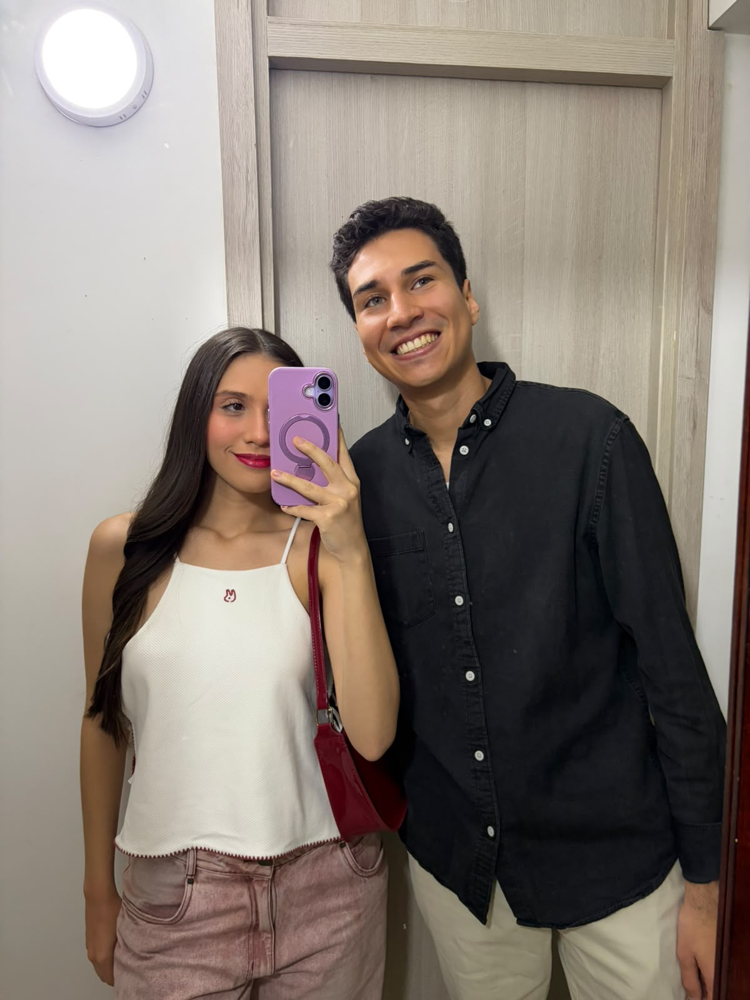
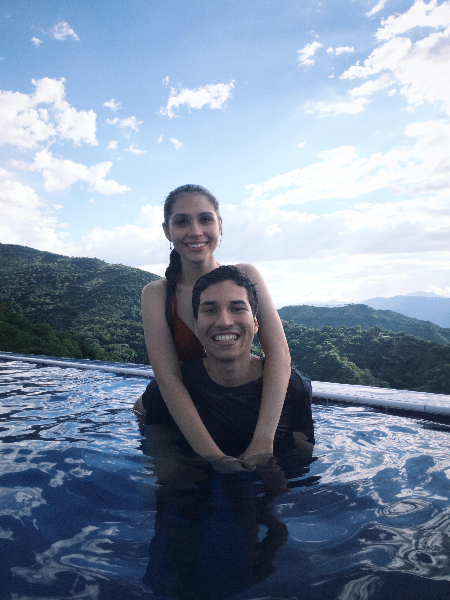
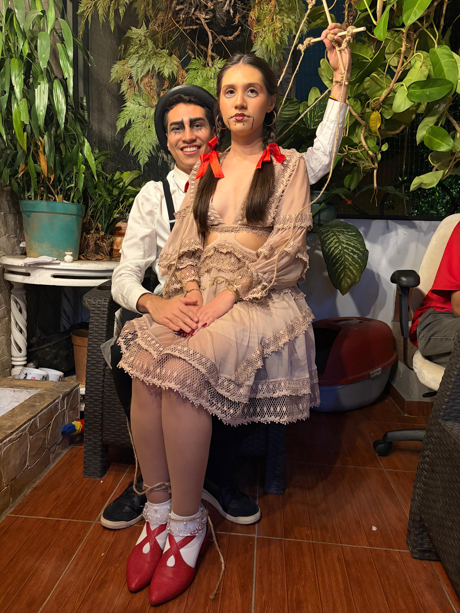

Vuelo I • El Comienzo
Donde Comenzó el Vuelo
Ese instante en el que dos miradas bastaron para cambiarlo todo. Justo como cuando Hipo extendió la mano y encontró en Chimuelo a su mejor aliada.
Para mi Astrid valiente y mi tierna Chimuela

Ese instante en el que dos miradas bastaron para cambiarlo todo. Justo como cuando Hipo extendió la mano y encontró en Chimuelo a su mejor aliada.

Nuestra complicidad sin poses ni filtros. Tu risa y esa energía que tienes es lo que llena de color hasta los días más grises.

Los momentos sin prisa, acostados compartiendo miradas y tonterías. Contigo aprendí que el mejor lugar del mundo no es un sitio, es tu lado.

Esa noche que te vi vestida de gala me recordaste con total certeza a Astrid: radiante, dueña del lugar y con una elegancia que desarma a cualquiera.

Los paseos sencillos, arreglarnos para salir y robar un instante frente al espejo. Cada salida contigo se siente como descubrir un Berk nuevo.

Rodeados de verdes montañas y agua infinita. Esa sensación exacta de cuando Hipo y Furia Nocturna atraviesan las nubes: absoluta calma y libertad en tu abrazo.

Nuestra creatividad compartida. No importa la locura o el disfraz: nadie hace un equipo tan auténtico, divertido e inseparable como nosotros dos.
En Noches Blancas, la bienaventuranza duró apenas un instante en un puente. Para nosotros, cada minuto es real, fuerte y sigue creciendo. Gracias por ser mi guerrera, mi refugio y mi mejor copiloto.